2026 PROJECT MANAGEMENT REVIEW
双周轮岗实战复盘报告 (W6-W7)
PM 流程知识闭环 & 测试技术领域开拓
汇报人：关志邦 (Trainee)
导师：月桂 (PM) | 陈德 (Testing)
周期：Week 6 - Week 7
导师：月桂 (PM) | 陈德 (Testing)
周期：Week 6 - Week 7
冬季 (猫屋 & 猫窝) 系列推进看板
1. 进度明细 (截至 W6：1.9)
| 样品名称 | 当前进度 | 发现问题 | 应对策略 | 预计节点 |
|---|---|---|---|---|
| 1.4 加热垫 | 测试中 | 1.11 | ||
| 1.5 猫屋 (TR4) | 测试完成 | 1、常规SML码和防水S码，都有69N拉坏魔术贴的情况。 2、常规SML码都有外箱尺寸超出的情况（产品已悉知） 3、常规SML码都有渗水情况 4、常规L码有产品尺寸问题（高度少了3cm） |
[针对尺寸决策]：改小刀模尺寸，改用硬度更高材质包装防止软塌。 | 1.8 出报告 |
| 1.7 猫窝色样 (TR3) | 视频对齐完成 | 1、目前（灰，棕）色样未达到要求 2、布料的密度及手感（毛硬、稀疏）也未达到要求。 |
1、寄样棕色M码给工厂，作为打样参考样。 2、要求工厂尽量找对色样（如果需要定制颜色，要告知 周期 & 起订量） 3、在大货之前，要确认有样品使用正确颜色打样。 4、猫窝（pp棉）压缩好些，要保证回弹没问题。 5、要求工厂猫窝压缩包装纸箱的尽量切割好，以便我们按大货包装来测算物流费用。 |
1.7 已完成 |
| 控制器 (TR3) | 对齐结构3D图中 | 1、控制器组装内部结构固定有问题 2、按键防水问题 |
1、输出解决方案中 2、按键内部增加软硅胶密封层，达到全封闭防水效果。 |
1.15 |
2. ai风险推演看板
阶段一：批量生产启动期 (3月 - 4月) 核心：抢占资源
风险 1：物料供应“季节性短缺”
预测：4-5 月进入全球生产高峰，特定克重的抽条兔绒面临大客户包仓，或因染厂排产过载导致批次色差。
应对：PDCP（决策下单）后立即支付定金“锁坯布、锁色号”；同时预选一款颜色接近的“公版面料”作为 Plan B。
风险 2：产线 SOP 执行偏差
预测：大货组装时，加热垫位置偏离或温控传感器贴合不紧，产生批量性安全隐患。
应对：TR5 试产阶段锁定走线治具（非手工摆放），强制要求合拢包边前进行 100% 半成品通电老化测试。
阶段二：清关与离港准备期 (5月 - 6月) 核心：合规死线
风险 4：船期动荡与订柜失败
预测：碰撞欧美返校季物流高峰，头程费激增或“一柜难求”。
应对：预订保舱保柜协议；内部提前 10 天预警。
阶段三：跨海运输存储期 (7月 - 8月) 核心：存储品质
风险 5：海上“桑拿房”导致霉变与氧化
预测：高湿度环境下，电子件针脚氧化失灵，毛绒面料产生异味或霉点。
应对：强制要求：PE 袋厚度 > 0.05mm + 2个干燥剂；TR4 须通过 48H 高温高湿实验。
风险 6：平台入库“超限”拒收
预测：包装软塌导致“围径超标”判定为大件，费用翻倍。
应对：尺寸风控前置，采用高磅数外箱并优化排版压缩。
项目流程要点总结 (PM 轮岗沉淀)
-
需求与填写
-
组织与动作
-
交付表格
-
异常关注点
-
W7: 测试轮岗实战初探
1. 理论对齐：测试基本知识与历史案例
🔌 基础知识沉淀
-
插头规范：学习全球主流国家插头标准及认证。
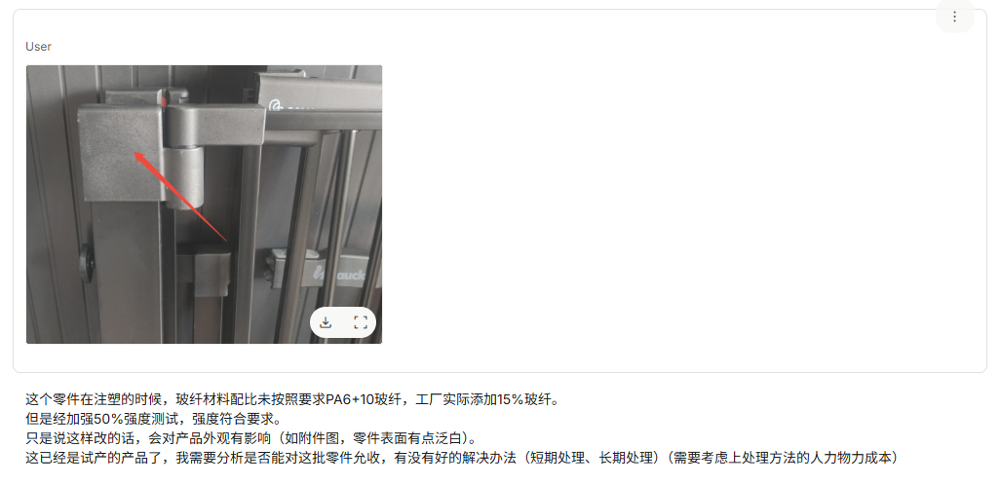
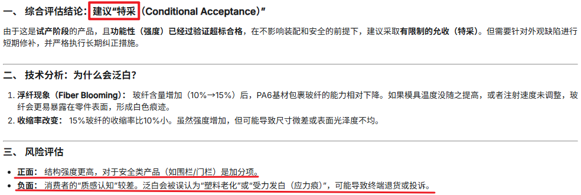
-
电学基础：理解 AC（交流）与 DC（直流）测试内容的差异。
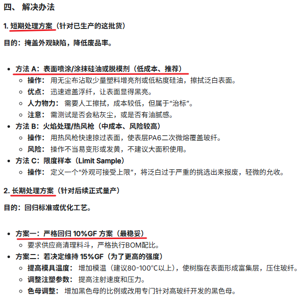
-
产品测试维度总结（带电）：
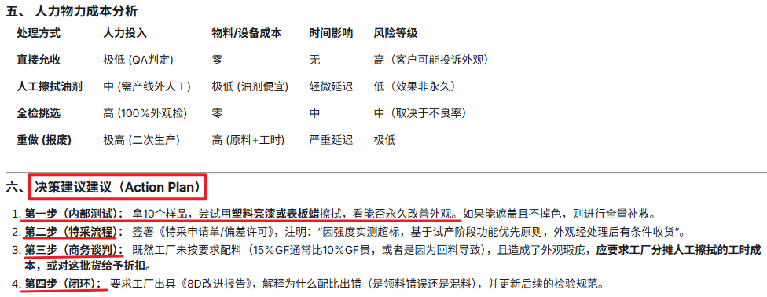
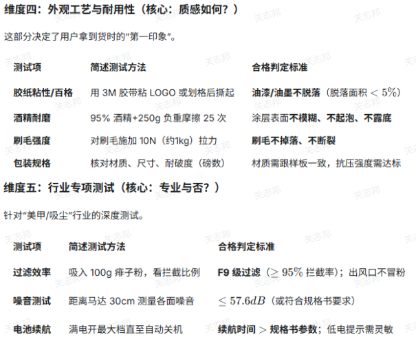
📋 现有案例对齐
- 双涡轮美甲吸尘器：整机测试报告 20251010 （适配器的过流、过压、短路测试）
- 无线便携美甲吸尘器：整机测试报告 20251201 （待机电流、工作电流、低压测试）
- 制冰机：POC 技术验证报告 20251222
2. 专项实战：美甲吸尘器 (TR4A) 复测验证
测试项
测试方法与标准
测试目的与结论
测试进尘
测试工具：90g 扉子粉（模拟微细甲尘）、电子天平、拆解工具。
测试方法：
1、称重准备：称取 90g 扉子粉均匀散布在吸尘器进风口区域。
2、满载运行：开启吸尘器至最高档位，持续运行 15 分钟，确保粉尘被充分吸入。（磨掉两个美甲的量）
3、拆解检查：关闭电源，拆开产品外壳。
4、内部核实：重点检查 控制电路板（PCB） 表面、风机马达绕组处是否有肉眼可见的白色粉末积聚。
合格标准：电路板表面应保持干爽洁净，无明显粉尘堆积；马达转动部无粉尘阻塞感。
测试方法：
1、称重准备：称取 90g 扉子粉均匀散布在吸尘器进风口区域。
2、满载运行：开启吸尘器至最高档位，持续运行 15 分钟，确保粉尘被充分吸入。（磨掉两个美甲的量）
3、拆解检查：关闭电源，拆开产品外壳。
4、内部核实：重点检查 控制电路板（PCB） 表面、风机马达绕组处是否有肉眼可见的白色粉末积聚。
合格标准：电路板表面应保持干爽洁净，无明显粉尘堆积；马达转动部无粉尘阻塞感。
目的：规避甲尘吸入电路板造成短路隐患。
测试电火花
测试工具：原装适配器、直流可调电源、高速摄像机（可选）。
测试方法：
1、暗室环境：在光线较暗的环境下进行（便于捕捉微弱火花）。
2、带电插拔：适配器先接电，然后连续插入和拔出吸尘器的 DC 充电孔。
3、循环操作：重复“插-拔”动作 5 次，观察接触瞬间火花的产生频率和大小。
合格标准：肉眼观察无明显刺眼的强烈火花（电弧）；测试后 DC 插头及插孔金属片无发黑、碳化或烧焦痕迹。
测试方法：
1、暗室环境：在光线较暗的环境下进行（便于捕捉微弱火花）。
2、带电插拔：适配器先接电，然后连续插入和拔出吸尘器的 DC 充电孔。
3、循环操作：重复“插-拔”动作 5 次，观察接触瞬间火花的产生频率和大小。
合格标准：肉眼观察无明显刺眼的强烈火花（电弧）；测试后 DC 插头及插孔金属片无发黑、碳化或烧焦痕迹。
问题：DC孔插入时出现电火花
原因：插头接触瞬间，没电的电容疯狂抢电产生的极强“浪涌电流”，击穿空气形成了火花。
目的：规避客诉和使用风险
原因：插头接触瞬间，没电的电容疯狂抢电产生的极强“浪涌电流”，击穿空气形成了火花。
目的：规避客诉和使用风险
测试摇晃异响
测试方法：
1、静态摇晃：在关机状态下，手持机器沿 X/Y/Z 三个轴向用力摇晃，听内部是否有松动撞击声。
2、多角度动态测试：开启机器至最高档，将机器分别呈 45度、90度、180度（倒置） 翻转并摇晃。
3、重点倾听：观察在风力产生下压力的瞬间，是否出现“滋滋”的刮蹭声（蹭到线路）。
合格标准：任何角度下运行，均不应出现尖锐的摩擦声或金属撞击声；摇晃时内部零件（如线束、电容）应固定牢固，无松动感。
1、静态摇晃：在关机状态下，手持机器沿 X/Y/Z 三个轴向用力摇晃，听内部是否有松动撞击声。
2、多角度动态测试：开启机器至最高档，将机器分别呈 45度、90度、180度（倒置） 翻转并摇晃。
3、重点倾听：观察在风力产生下压力的瞬间，是否出现“滋滋”的刮蹭声（蹭到线路）。
合格标准：任何角度下运行，均不应出现尖锐的摩擦声或金属撞击声；摇晃时内部零件（如线束、电容）应固定牢固，无松动感。
问题：摇晃时产品有异响
原因：摇晃产品时，风力产生下压力，剐蹭到线路
目的：规避产品损坏风险，让用户有更好的使用体验
原因：摇晃产品时，风力产生下压力，剐蹭到线路
目的：规避产品损坏风险，让用户有更好的使用体验
3. 专项实战：制冰机POC测试 (TR2)
测试项
实测数据
图片
测试目的
制冰机首次出冰时间，24小时/天的制冰量测试
首次出冰时间：7分55秒
24小时制冰量：约 12,451克
（满冰时间为1小时13分58秒）
24小时制冰量：约 12,451克
（满冰时间为1小时13分58秒）
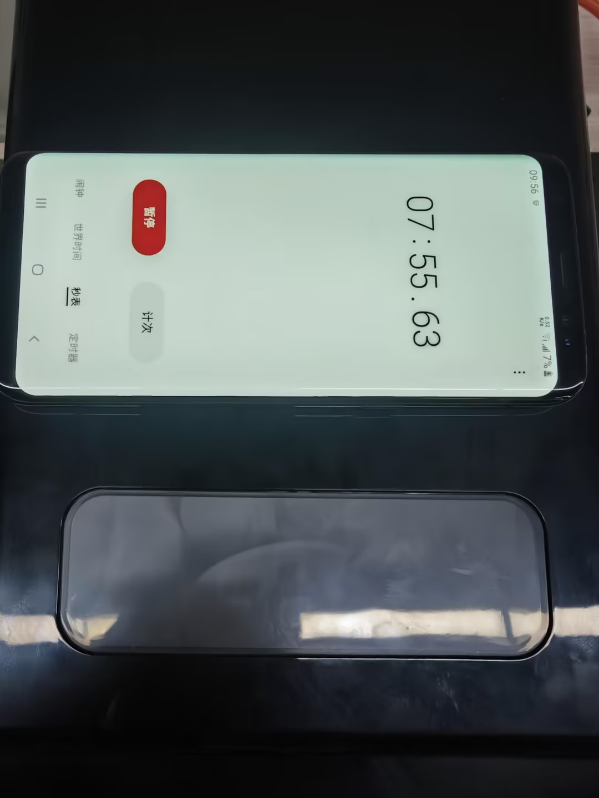
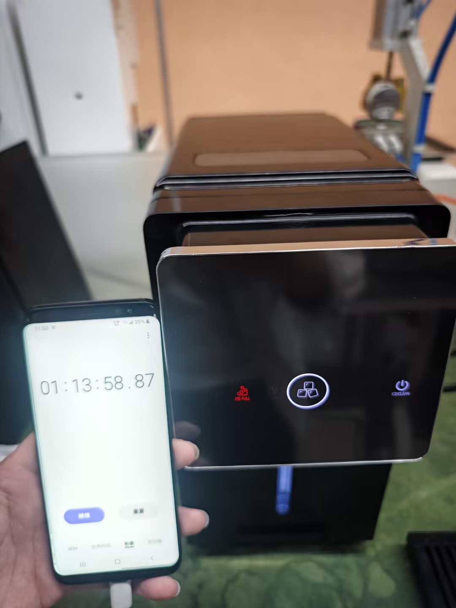
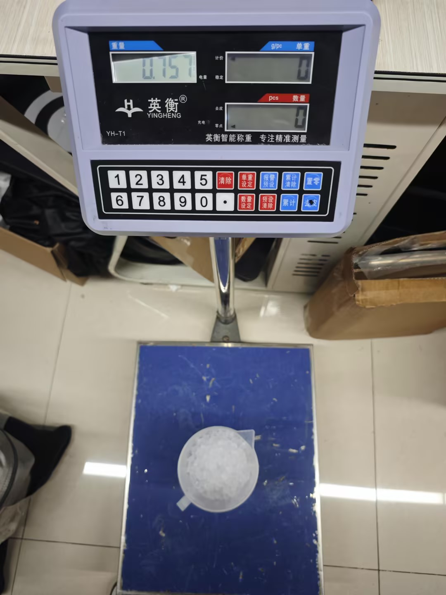
验证核心制冷功率与出冰效率
满冰停机、缺水报警测试
满冰触发自停；缺水发出报警信号。
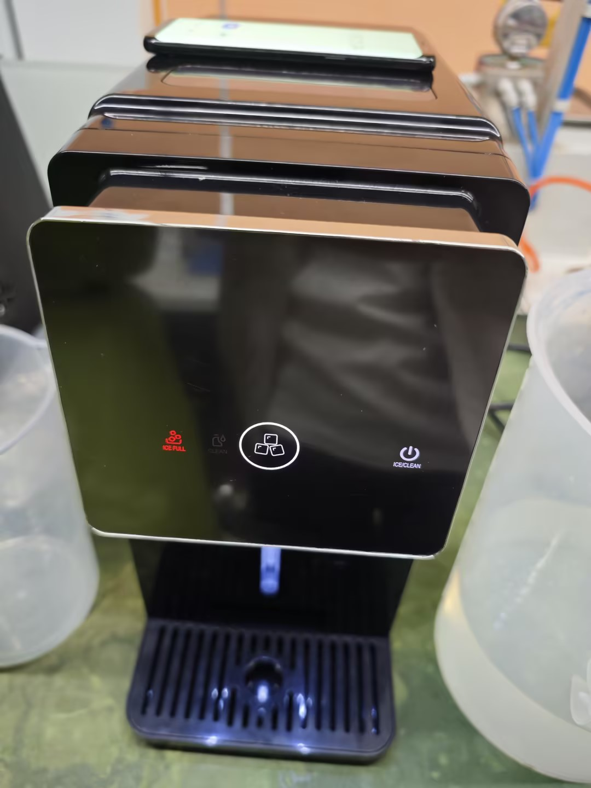
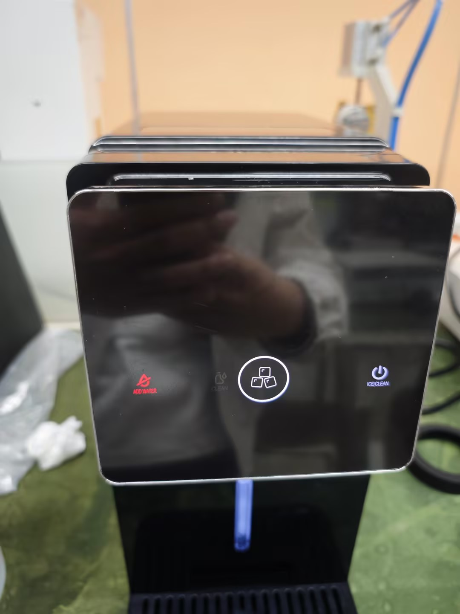
确保防溢出及防干烧保护机制有效。
介质兼容性测试
放置可乐后，机器感应器显示“缺水”
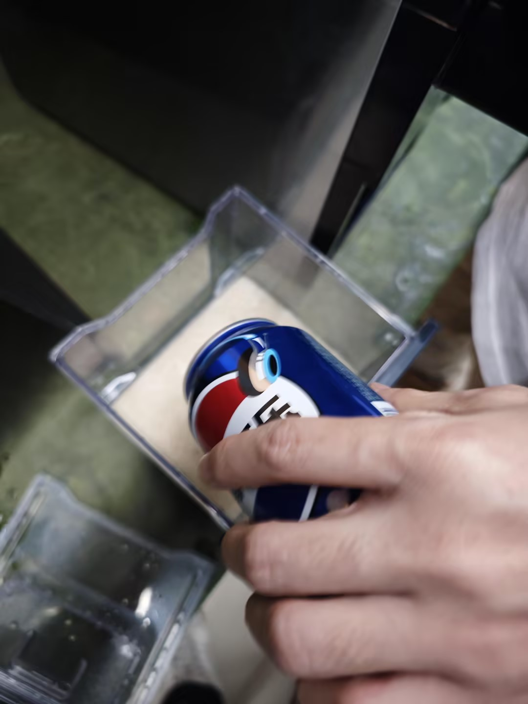
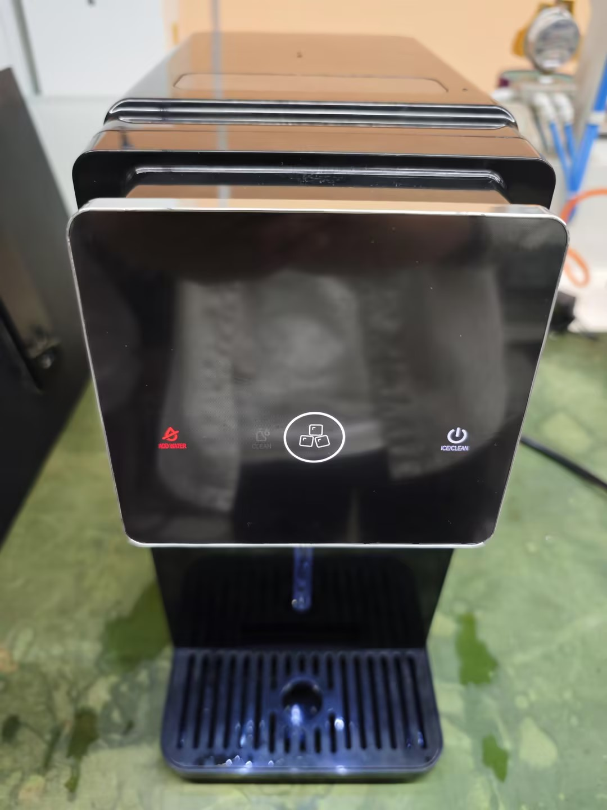
验证水位探测器对不同透明度、电导率液体的兼容性及探测边界。
结构易用性评价
1.内置水箱难以清洁；2.水箱无MAX水位上限线；3.储冰盒不可拆卸。
/
评价产品的人机工程学设计。
测量工作噪音
实测数据： 噪音值约 46.9dB(A)
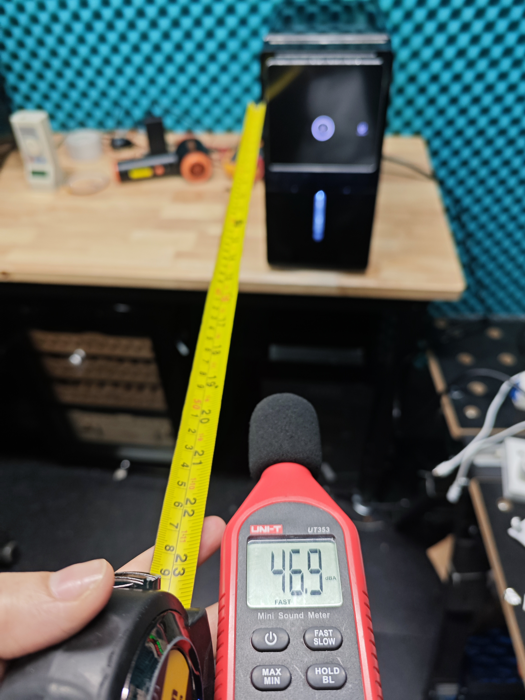
验证静音水平及结构密封性
后续工作计划
🧪 W8 测试技能深耕
- 基于规格书，学会制定测试用例。
- 上手测试产品基本功能，组装安装。
- 了解产品测试更多的各种测试原理。
🔍 W8 测试技能深耕
- 学会产品的可靠性测试，BETA测试。
- 经历一款DTC产品的测试，问题分析，复测验证。
- 思考测试标准的提升如何反馈给研发端，实现设计闭环。